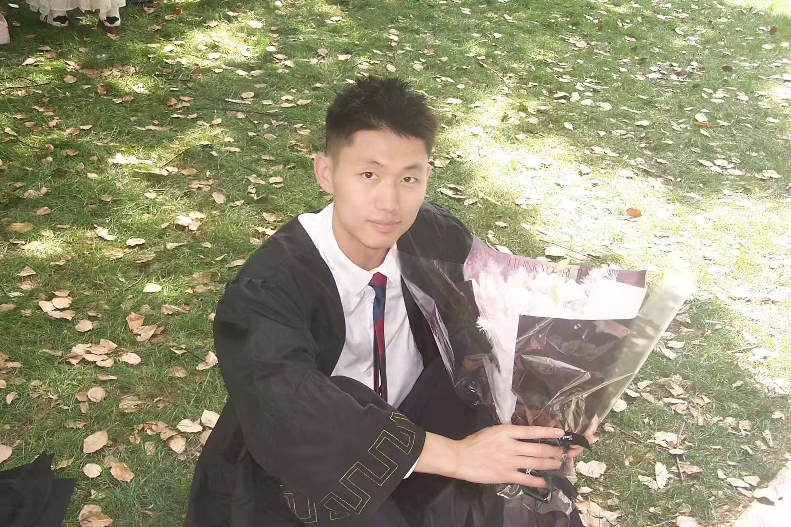
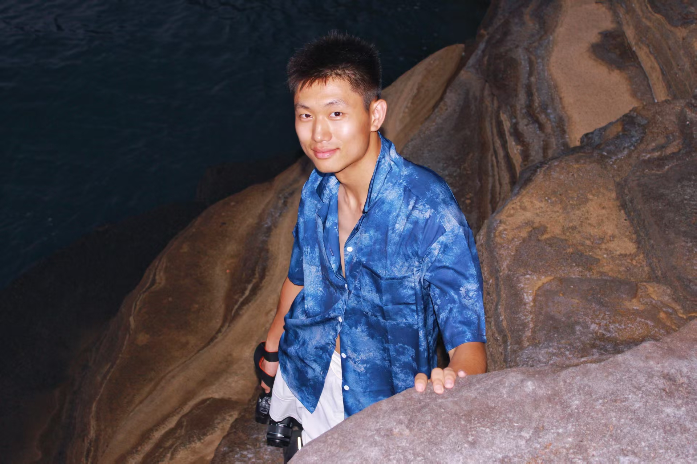
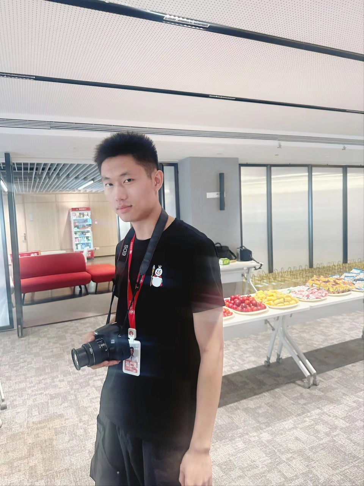
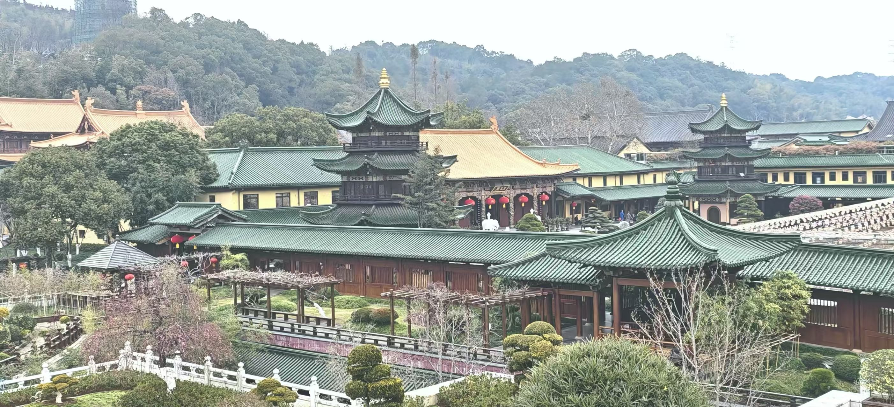
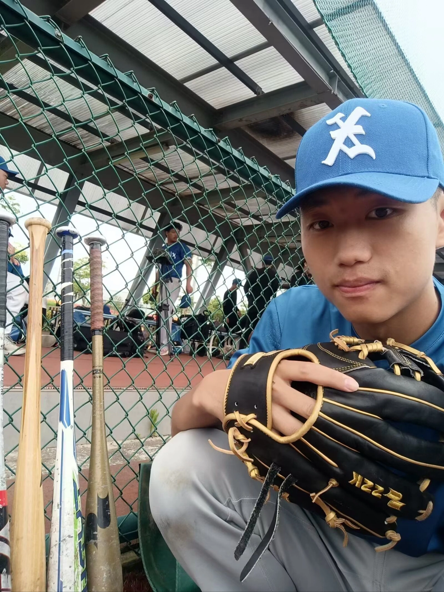
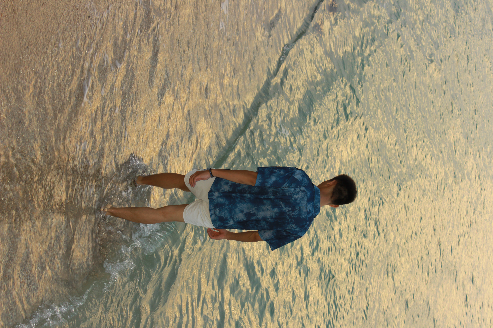
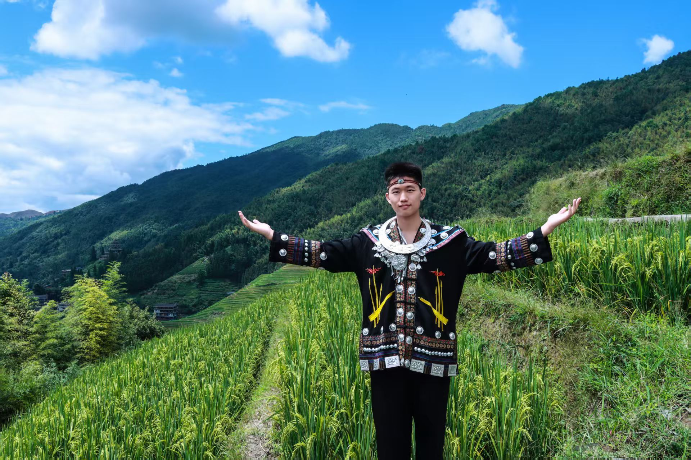

上海 / 2025 年完成学业
先厘清事实，
再形成判断。
本科在上海读法学。保留学籍入伍后，退伍回校，完成了学业。大学期间加入棒球队校队，曾获大学生全国锦标赛亚军。
2025法学本科毕业
军旅之后，回到课堂
读这段经历军旅之后，回到课堂
贵阳出发 · 一路行来
你好，我是祖仁泽。

法学本科，两年军旅，走进企业监察。
工作之外，读书、运动、听琴，也用镜头和文字记录生活。
01经历留下的底色
学过法律，服役两年，走进企业监察。
这些经历，落在我看问题、做事情的方式里。

上海 / 2025 年完成学业
本科在上海读法学。保留学籍入伍后，退伍回校，完成了学业。大学期间加入棒球队校队，曾获大学生全国锦标赛亚军。
加多宝 · 蜜雪冰城 / 企业监察
从求职时考虑律师与公务员，到进入企业监察岗位。工作涉及职务侵占、挪用资金、商业欺诈等案件的调查与处理，在实践中积累判断与经验。

选择上方的一个章节，看看这段经历。完整的个人经历
02我的五本书
从普通人的生活，到对自心的觉察。
我的书单，也是一条理解生活的线索。
03传统文化与古诗词
喜欢儒释道、哲学和古诗词。读书时提出问题，也在生活中慢慢体会；闲时去古寺小住，给自己一点安静。

04运动 · 旅行 · 日常
球场上的专注，海边的停顿，
都是认识我的另一种方式。



05最近在听
卡农、Flower Dance。
选一首，就在这里听一会儿。
一段旋律层层展开，安静，也有向前的力量。
钢琴独奏 · Lee Galloway · 2:51轻快流动的琴声，适合给日常留一点明亮。
DJ OKAWARI · feat. tabeyellow选一首，听一会儿。
琴声，陪你留一个安静的片刻。播放歌曲时，背景轻音乐会暂停。Flower Dance 通过创作者的 SoundCloud 音频播放，加载速度取决于网络。
卡农：Johann Pachelbel 作曲，Lee Galloway 钢琴演奏；音频来自 Wikimedia Commons，按 CC BY-SA 3.0 使用，未剪辑。Flower Dance：DJ OKAWARI 发布的音频。
IP课程上堂课作业
上一堂课，我用镜头介绍自己。
这一次，把那段表达放进我的网站，让文字、经历与视频互相补充，也让你更具体地认识我。
点击播放，听我亲口介绍自己。
看完之后，继续看看我的经历与书单。
我的项目 / LIFE ARCHIVE
我发起了人生档案，希望少打字，也能整理自己的生活线索。
当前 1.0 在 Mac 本机整理支持的电脑活动、文档和媒体原件索引。
保持联系 / SAY HELLO
聊聊经历，也聊聊读书、运动与生活。